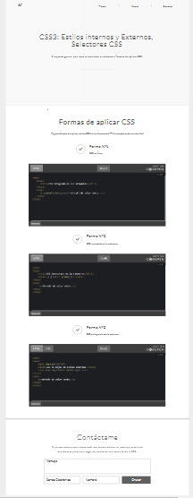

CSS3: Estilos internos y Externos, Selectores CSS
Objetivo General
Formas de aplicar CSS
Objetivos Especificos
- CSS en línea.
- CSS incrustado en la cabecera.
- CSS en hojas de estilo externas.
Materiales
¿Cómo aplicar estilos CSS en un documento HTML?
- Url: https://www.eniun.com/wp-content/uploads/Co%CC%81mo-aplicar-estilos-CSS-en-un-documento-HTML.png
- Url: https://www.eniun.com/como-aplicar-estilos-css-html
Maquetación

https://app.moqups.com/R2JPLpASEy/view/page/aa9df7b72?ui=0&fit_width=1